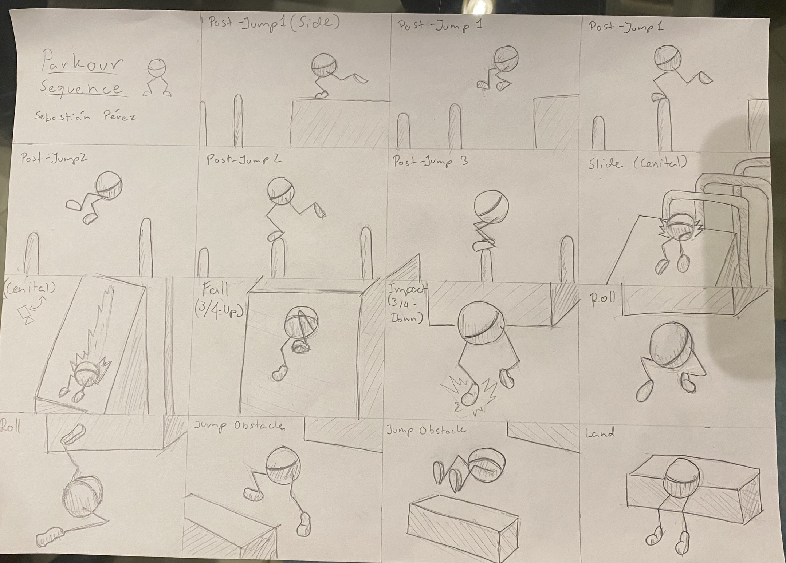

Para este proyecto, el modelo tridimensional y su esqueleto interno (el rig) ya estaban creados por otro artista. Mi trabajo consistió estrictamente en la animación. Muchas veces se asume que la computadora calcula el movimiento por sí sola, pero la realidad es muy distinta.
Animar en 3D es un proceso sumamente meticuloso y largo. Implica mover pequeños controladores (como si fuera una marioneta digital) fotograma por fotograma. Debes dictarle al software matemáticamente cómo debe acelerar o frenar un movimiento usando curvas y gráficos, además de entender conceptos físicos vitales: el peso, la gravedad, la anticipación de un salto y la transferencia de energía al aterrizar. Un segundo de animación fluida puede tomar horas de ajuste y refinamiento constante.
Antes de mover el personaje, necesitas saber hacia dónde va. El primer paso fue diseñar un Layout: un mapa visual de cómo se iba a desarrollar la animación. En esta imagen planifiqué la trayectoria del personaje, la ubicación exacta de los obstáculos (cajas y plataformas), los puntos de salto, dónde debía rodar para amortiguar la caída y cómo fluiría la acción en el espacio tridimensional.

Con el mapa establecido, pasé a Maya para crear la primera fase de la animación, conocida como Blocking (bloqueo). En este video de avance se puede ver un movimiento muy básico, casi robótico. El objetivo aquí no es la fluidez, sino establecer las poses clave (las poses que cuentan la historia), medir el timing (los tiempos de cada acción) y, lo más importante, ajustar las cámaras.
Basándome en el layout dibujado previamente, coloqué y animé las cámaras virtuales en Maya para asegurar que la acción se leyera de forma clara y cinematográfica antes de comprometerme a realizar los detalles finos del movimiento corporal.
El paso final es el pulido (Splining y Polish). Es aquí donde se invierte la mayor cantidad de horas. Consiste en suavizar las transiciones entre esas poses estáticas del blocking, ajustar los arcos de movimiento de los brazos y piernas, y añadir movimientos secundarios para que el personaje no se sienta tieso.
El principal reto del parkour es la biomecánica: hacer que un muñeco digital se sienta pesado al caer y ligero al volar. Tras un largo proceso de ajustes en el editor de curvas de Maya, este es el resultado final de la coreografía.